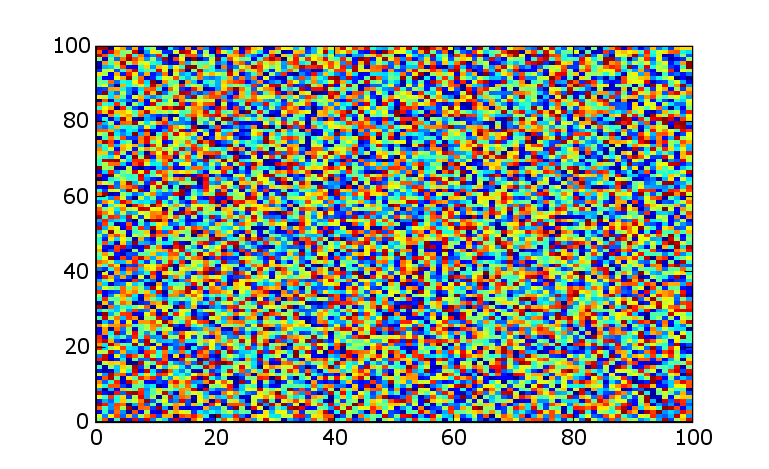
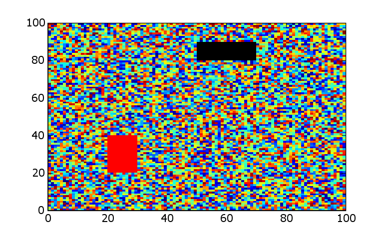

Image plotting requires data, a colormap, and a normalization. A common desire is to show missing data or other values in a specified color. The following code shows an example of how to do this.
The code creates a new Colormap subclass and a norm subclass.
The initialization takes a dictionary of value, color pairs. The data is already assumed to be normalized (except for the sentinels which are preserved). The RGB values at the sentinel values are replaced by the specified colors.
The class normalizes the data in the standard way except for one sublety. takes an “ignore” argument. The ignored values need to be excluded from the normalization so that they do not skew the results.
I use a not particularly wonderful algorithm of explicitly sorting the data and using the first non-sentinel values to define the min and max. This can probably be improved, but for my purposes was easy and sufficient. The data is then normalized including the sentinels. Finally, the sentinels are replaced.
from matplotlib.colors import Colormap, normalize
import matplotlib.numerix as nx
from types import IntType, FloatType, ListType
class SentinelMap(Colormap):
def __init__(self, cmap, sentinels={}):
# boilerplate stuff
self.N = cmap.N
self.name = 'SentinelMap'
self.cmap = cmap
self.sentinels = sentinels
for rgb in sentinels.values():
if len(rgb)!=3:
raise ValueError('sentinel color must be RGB')
def __call__(self, scaledImageData, alpha=1):
# assumes the data is already normalized (ignoring sentinels)
# clip to be on the safe side
rgbaValues = self.cmap(nx.clip(scaledImageData, 0.,1.))
#replace sentinel data with sentinel colors
for sentinel,rgb in self.sentinels.items():
r,g,b = rgb
rgbaValues[:,:,0] = nx.where(scaledImageData==sentinel,
r, rgbaValues[:,:,0])
rgbaValues[:,:,1] = nx.where(scaledImageData==sentinel,
g, rgbaValues[:,:,1])
rgbaValues[:,:,2] = nx.where(scaledImageData==sentinel,
b, rgbaValues[:,:,2])
rgbaValues[:,:,3] = nx.where(scaledImageData==sentinel,
alpha, rgbaValues[:,:,3])
return rgbaValues
class SentinelNorm(normalize):
"""
Leave the sentinel unchanged
"""
def __init__(self, ignore=[], vmin=None, vmax=None):
self.vmin=vmin
self.vmax=vmax
if type(ignore) in [IntType, FloatType]:
self.ignore = [ignore]
else:
self.ignore = list(ignore)
def __call__(self, value):
vmin = self.vmin
vmax = self.vmax
if type(value) in [IntType, FloatType]:
vtype = 'scalar'
val = array([value])
else:
vtype = 'array'
val = nx.asarray(value)
# if both vmin is None and vmax is None, we'll automatically
# norm the data to vmin/vmax of the actual data, so the
# clipping step won't be needed.
if vmin is None and vmax is None:
needs_clipping = False
else:
needs_clipping = True
if vmin is None or vmax is None:
rval = nx.ravel(val)
#do this if sentinels (values to ignore in data)
if self.ignore:
sortValues=nx.sort(rval)
if vmin is None:
# find the lowest non-sentinel value
for thisVal in sortValues:
if thisVal not in self.ignore:
vmin=thisVal #vmin is th
e lowest non-sentinel value
break
else:
vmin=0.
if vmax is None:
for thisVal in sortValues[::-1]:
if thisVal not in self.ignore:
vmax=thisVal #vmax is th
e greatest non-sentinel value
break
else:
vmax=0.
else:
if vmin is None: vmin = min(rval)
if vmax is None: vmax = max(rval)
if vmin > vmax:
raise ValueError("minvalue must be less than or equal to
maxvalue")
elif vmin==vmax:
return 0.*value
else:
if needs_clipping:
val = nx.clip(val,vmin, vmax)
result = (1.0/(vmax-vmin))*(val-vmin)
# replace sentinels with original (non-normalized) values
for thisIgnore in self.ignore:
result = nx.where(val==thisIgnore,thisIgnore,result)
if vtype == 'scalar':
result = result[0]
return result
if __name__=="__main__":
import pylab
import matplotlib.colors
n=100
# create a random array
X = nx.mlab.rand(n,n)
cmBase = pylab.cm.jet
# plot it array as an image
pylab.figure(1)
pylab.imshow(X, cmap=cmBase, interpolation='nearest')
# define the sentinels
sentinel1 = -10
sentinel2 = 10
# replace some data with sentinels
X[int(.1*n):int(.2*n), int(.5*n):int(.7*n)] = sentinel1
X[int(.6*n):int(.8*n), int(.2*n):int(.3*n)] = sentinel2
# define the colormap and norm
rgb1 = (0.,0.,0.)
rgb2 = (1.,0.,0.)
cmap = SentinelMap(cmBase, sentinels={sentinel1:rgb1,sentinel2:rgb2,})
norm = SentinelNorm(ignore=[sentinel1,sentinel2])
# plot with the modified colormap and norm
pylab.figure(2)
pylab.imshow(X, cmap = cmap, norm=norm, interpolation='nearest')
pylab.show()
If the preceeding code is run from a prompt, two images are generated. The first is a pristine image of random data. The second image is the data modified by setting some blocks to sentinel values and then plotting the sentinels in specific colors. A sample result is shown below.
 CategoryCookbookMatplotlib